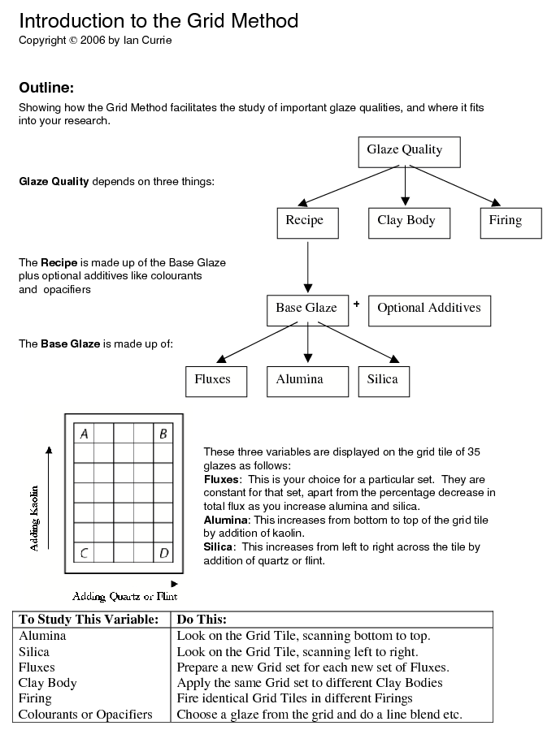
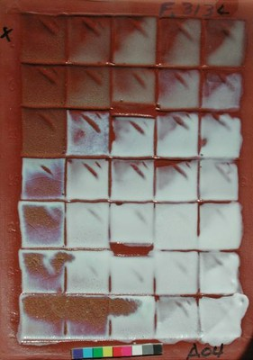
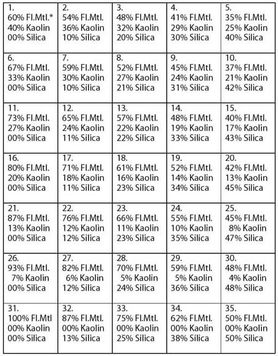
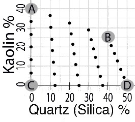
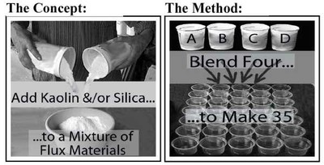
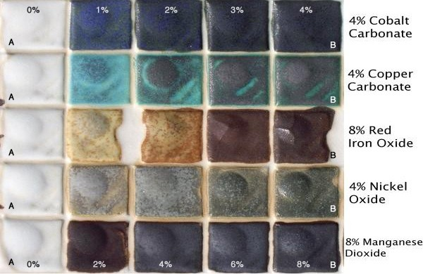

The Grid Method, while Sitting Down
A closer look at how the Grid Method works. For a briefer summary of the method, see The Grid Method, while Standing on One Leg, starting with The Main Variables.
The Grid Method isolates the important factors and varies them systematically to discover the effects. This is explained fully in the workshops and lectures, and also is laid out in full in "Revealing Glazes - Using the Grid Method", which may be purchased at this web site.
Below you will find an introduction to this method with an overview of how the variables are managed.

Before proceeding we need to understand a little of the three main ingredients:
Inside the Base Glaze
There are three variables in the base glaze:
Flux (the melter)
Alumina (the stiffener)
Silica (the glass former)
These three descriptions, melter, stiffener and glass former, explain the main role of each, but it is important to understand that they do much more than melt, stiffen and form glass. The complete story is revealed by looking at the fired grid tile.
Most glazes contain more than one flux material, but for now we will consider the case where there is just one. Below is a photograph of a low-fired terracotta grid tile where the only flux material used is Ferro Frit 3134. The bottom left-hand corner square (the C-corner) consists of just Frit 3134. The rest of the glazes are obtained by blending in Kaolin to go up the grid and silica (or quartz or flint) to go left to right across the grid.

You can get all the recipes for this set by looking at the Standard Recipe Grid below. Each little box contains the Glaze Number at the top, plus the percentage of Total Flux Material ("Fl.Mtl."), and the percentages for Kaolin and Silica (also called quartz or flint). These are all recipes, and the three ingredients are the materials you put into the bucket to make the glaze. It is definitely not rocket science.
The Standard Recipe Grid
Glaze Recipes and Glaze
Numbering: This diagram shows the recipes for each base glaze in the grid
(to the nearest 1%). It also shows the standard layout of the glaze
numbers from 1 to 35. These glaze numbers and percentages do not change as you move from grid to grid by changing the flux materials.
[*Note below: " Fl.Mtl." = "Total Flux Materials"]

Note the following points in the Standard Recipe Grid
- Glaze 31 is 100% flux materials. This is Corner C. (In the photo above it is Frit 3134)
- The bottom row contains no kaolin.
- The left-hand vertical column contains no added silica.
- The maximum amount of kaolin is 40% in Glaze No.1 (Corner A).
- The maximum amount of added silica is 50% in Glaze No.35 (Corner D).
- These are all "base glaze" recipes. Adding colourants or opacifiers to a grid will be explained later.
- This layout of glaze numbers and ingredient percentages applies to all standard grids in the Grid Method. This is one of the more powerful features of this method. As a result...
- If you have the recipe for Corner C (Glaze 31) (or for that matter any one of the 35 glazes) you can work out the recipes for all the rest. Each set is usually defined by listing the recipe for Corner C. If we wish to compare the recipes for two different sets of glazes, we can do this simply by comparing the two Corner C glazes. This is a natural consequence of standardizing the method.
- If you look along most of the rows and columns (except the bottom row and the left-hand column) you will see that kaolin and silica (quartz) percentages are not constant. The actual layout is seen in the following diagram:
Graph showing the 35 glazes and their Percentages of Kaolin and Quartz

The reason for this unusual form for the experiment is to cover the main field of glazes that usually melt with the most efficient use of the volumetric blending process.
Understanding the Grid

The Concept
To understand the relationship between the 35 glazes, imagine this:
Initially we decide on the composition of glaze 31, the starting point glaze, which is composed of 100% flux materials. We could obtain the rest of the 35 glazes in the set by adding kaolin and/or silica to Glaze 31. Therefore the flux materials don't change as kaolin and silica increase. But this is not how we actually prepare the glazes for the initial grid experiment.....
The Method
To prepare a set, we make up the 4 glazes at the corners of the set, numbers 1, 5, 31 and 35, and blend them to produce the rest. These 4 glazes are also referred to as A, B, C and D respectively.
One set represents the "story" of the set of flux materials originally chosen for glaze 31, examining how it changes as we increase alumina and/or silica.
Glaze C - One Glaze Recipe Explains the Whole Set
Another result of using this approach is that all the glaze recipes can be worked out once we know the recipe for the Corner C glaze. This is a natural consequence of standardizing the method. This means the only recipe we need to record is Glaze C. From this anyone understanding the method can work out the rest of the 35 recipes if and when required. It also means that we can think of a whole set of glazes just by stating one recipe, Glaze C. We can compare whole sets of glazes one with another just by comparing the C-corner glazes; the difference between sets can be fully understood by examining the difference between the two C-glazes. This is because a particular square on the grid always has the same amounts of kaolin and silica in the recipe.
Getting the 35 Recipes
The process of getting the 35 recipes is very simple. It can be done several ways as listed in "Revealing Glazes - Understanding the Grid Method". The simplest way is to use the Calculation Page at this website under Resources. Anyone can use this.
The process is to input the recipe for Glaze C (Glaze 31) into the data entry boxes and click the "Calculate" button. This will produce a list of 35 glazes as percentages, and also at the bottom you will see the 300 gram batch recipes for A, B, C and D. You need 300 grams to get enough glaze to blend up all 35 glazes.
Colourants and Opacifiers in the Standard Grid
To achieve all the benefits of the standard grid, we need to maintain the isolation of variables. This layout can handle two isolated variables, and they are alumina and silica (from addition of kaolin and quartz). If we wish to add a colourant or opacifier to the set, we use the same in every glaze, otherwise we could not tell if the observed changes across the grid were due to the variation in alumina and silica, or to the variation in the colourant or opacifier. When you introduce a colourant into the Calculation Page (Rows 3 and 4) you will note that all 35 glazes contain the same amount.
If we wish to study in depth the variation of colourant or opacifier in glazes, we would normally use the grid initially to choose one or more base glazes (for characteristics like melting point, surface quality, opacity, crystal formation, crazing, runniness etc.) and then add colourants/opacifiers using line blending, or perhaps a biaxial or triaxial experiment. The grid tile is needed only in the initial search for the base glaze(s) used.
Line Blends
In this image, the matt base glaze shown on the left was chosen from a grid to experiment with addition of colouring oxides. A series of simple line blends was prepared from the base glaze (0%) to maximum of either 4% or 8% as shown.

Recipe Format
The general rule that will apply for this method is that colourants and opacifiers will be added as a percentage on top of the 100% of the base glaze. See the following example.
Glaze Recipe:
100% Base Glaze
+10% Red iron oxide
Revealing Glaze Principles
As well as discovering interesting glazes, the standard grid method also reveals glaze principles because wherever possible we are separating out the variables. This reveals cause and effect. For example, a glance at a fired standard grid tile reveals immediately the effect of altering alumina or silica on a given set of fluxes. Also, we can see the effect of altering fluxes by comparing the grid tiles for 2 different sets, if they have been fired on the same clay under identical firing conditions.
 Previous: Getting the 35 Recipes
Previous: Getting the 35 Recipes